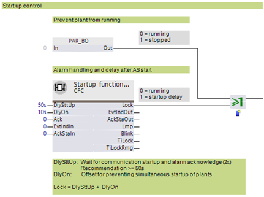
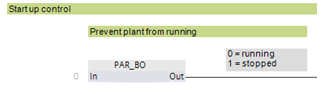
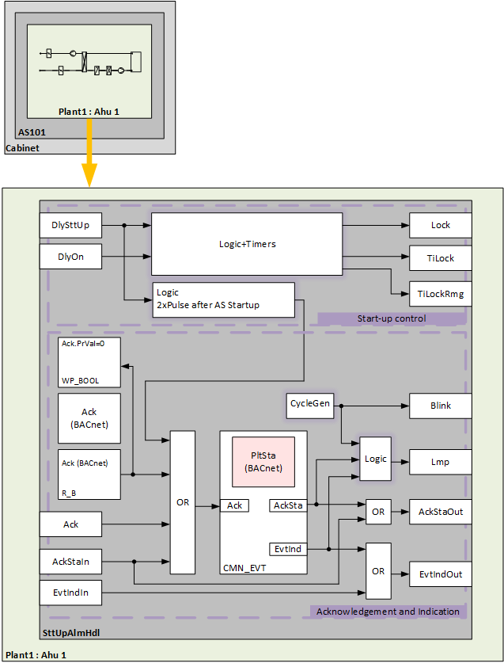
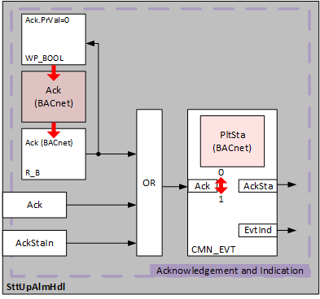
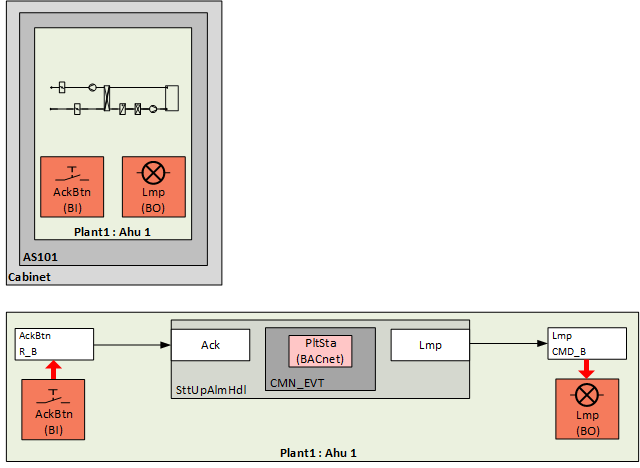
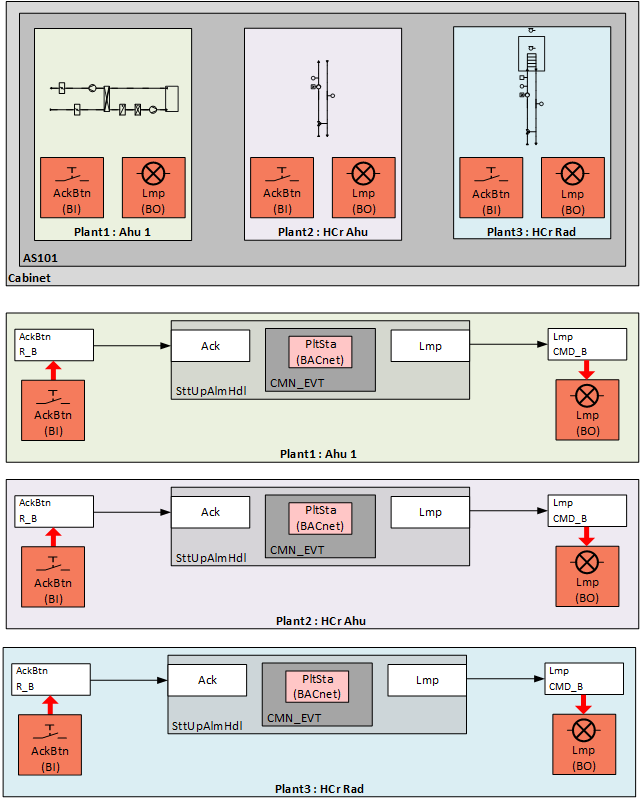
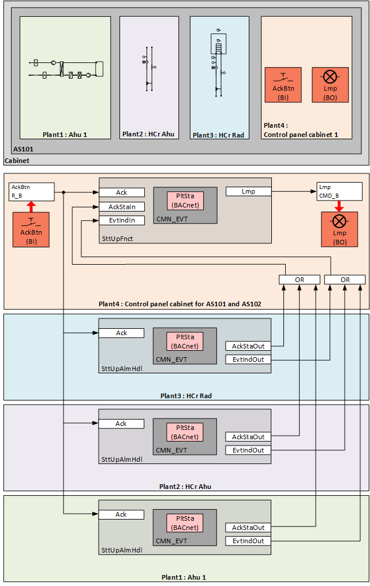
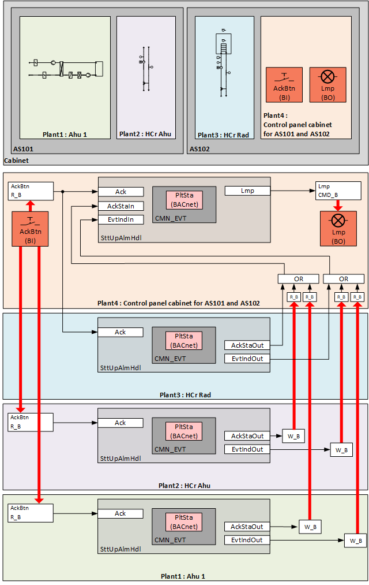

扁平植物的启动功能和警报处理
有多种方法可以执行警报指示和警报确认。
此外，还有一个例程可在自动启动工厂时自动确认警报。
这些设置在嵌套计划 SttUpAlmHdl 启动和报警处理中进行。
示例：工厂示例 Ahu21 空气处理机组中的启动功能

出于我们的目的，术语“事件”和“警报”在下文中是同义词。
单个工厂可以在Programming编辑。为此，PAR_BO 设置为 1。例如，如果一个自动化站上包括多个设备，但只有一部分设备运行，因为并非所有部件都运行，这可能是理想的。

Startup behavior
以下功能可用于设备的自动启动，例如在断电和随后恢复供电后：
- Fixed switch-on times. These can be set on input [DlySttUp]. The output [Lock] is "True" and the plant remains switched off. The plant remains off to ensure that communications are reliable and cross-check references are triggered.
- Automatic acknowledge (2x) of possible pending alarms during a fixed switch-on delay.
- Additional adjustable delay for staged plant ramp-up. This can be set on input pin [DlyOn].
- Output [TiLock] displays the entire period of the delay, i.e., [DlySttUp] + [DlyOn].
- Output [TiLockRmg] displays the remaining time until the output [Lock] is set to "False".
Example: Return of power after a power outage
- Fixed switch-on delay [DlySttUp] = 50 [s]
- Timeframe for automatic acknowledge = 20 [s]. Can be set in the nested chart SttUpFnct at input [In] of PAR_TI.
- Plant delay [DlyOn] = 10 [s] to prevent all plants from starting at the same time (avoiding voltage peaks).

Workflow in nested plant SttUpAlmHdl
控制器启动并且 S7 过程（Simatic 版本 7）运行。
- Output [Lock] is 1, activating the general exception mode. This switches off all plant components at priority 5.
- The first 30 [s] are used to establish communications (50 [s] - 20 [s]).
- In the following 20 [s], all alarms pending on a plant are automatically acknowledged twice (Ack).
- The entered additional delay [DlyOb] takes effect.
- Output [Lock] is set to 0 and the plant goes to normal operation.
输出 [TiLock] 显示整个延迟周期，即 [DlySttUp] + [DlyOn]。
异常被报告为当前操作模式的原因。
输出 [TiLockRmg] 显示输出 [Lock] 设置为 0 之前的剩余时间。
Alarm handling in nested plant SttUpAlmHdl
工厂事件的状态通过 BACnet 对象“工厂状态”获取。状态被映射到CMN_EVT.

可以使用以下功能：
- Automatic acknowledge (2x) after startup
- Alarm acknowledgement with a value object
- Logic for alarm indication:
- On for pending alarms
- Flashing for unprocessed alarms - Connect an acknowledge button [BI]
- Connect an alarm indication, e.g. an alarm lamp through an output block [BO]
- Connect to other alarm handling functions on other plants, e.g. acknowledge button and alarm indication for multiple plants in the same control cabinet
Automatic acknowledge (2x) after startup
控制器启动并短暂延迟后，逻辑会自动生成两个脉冲，影响 CMN_EVT 的输入 [Ack]。
Alarm acknowledgement with a value object
在嵌套图表 SttUpAlmHdl 内，使用软件确认按钮准备警报确认。
BACnet 对象确认 (Ack) 确认了脉冲。使用输入块 R_B（读取二进制）获取当前值，并将其传输到功能块 CMN__EVT 的输入 [Ack]。 BACnet 对象 Ack 的属性“当前值”通过将 BACnet 客户端设置为 1 来确认。
为了模拟按钮的操作，BACnet 对象 ACK 的属性“当前值”必须自动重置为 0。为此准备了定时器逻辑。如果 [Ack.PrVal] = 1，则逻辑在 2 [s] 周期后通过连接到 [Ack.PrVal] 的功能块 WP_BOOL 写入值 [Ack.PrVa] l= 0。

Alarm indication
CMN_EVT 有两个用于报警指示的输出：
- EvtInd
The value of the output is 1 on a pending alarm, in other words, if, in the hierarchy level (or lower) of the object Alarm state, at least one event of BACnet type 'Offnormal' or 'Fault' is active. - AckSta
The value of the output is 1 on an unprocessed alarm, in other words, if, in the hierarchy level (or lower) of object Plant state, a state transition (To-Fault, To-OffNormal) is unacknowledged on at least one object.
对两个输出进行评估并将其转发到嵌套图表 SttUpAlmHdl 的输出 [Lmp]。输出块 BO 可以通过 CMD_B 连接来控制报警灯。
待处理警报 [EvtInd] | 未处理的警报[AckSta] | [FltInd] |
|---|---|---|
|
0 | 0 | 离开 |
1 | 0 | 常亮 |
1 | 1 | 闪烁 |
0 | 1 | 闪烁 |
用于闪烁的周期发生器被设计为输出[闪烁]。相同的周期可用于其他指示的输出，例如用于启动期间的工作灯。
Example: Alarm indication and acknowledge button for 1 automation station with 1 plant
1个自动化站包括1个工厂。
事件由控制柜前面的警报指示（例如灯）指示，并使用确认按钮进行确认。

Example: Separate indication and acknowledge button for 1 automation station with 3 plants
1个自动化站包括3个工厂。
三个设备中每一个设备的事件均由控制柜前面的警报指示（例如灯）指示，并使用确认按钮进行确认。

Example: Common alarm indication and acknowledge button for 1 automation station with 3 plants
1个自动化站包括3个工厂和报警处理
为三个工厂收集的事件通过警报指示（例如灯）显示在控制柜的正面，并通过确认按钮进行确认。
报警处理在与附加设备相同的自动化站上定义。

Example: Common alarm indication and acknowledge button for 2 automation stations with 3 plants in the same control cabinet.
2个自动化站包括3个工厂和报警处理
为三个工厂收集的事件通过警报指示（例如灯）显示在控制柜的正面，并通过确认按钮进行确认。
报警处理在作为附加设备的第二个自动化站上定义。
